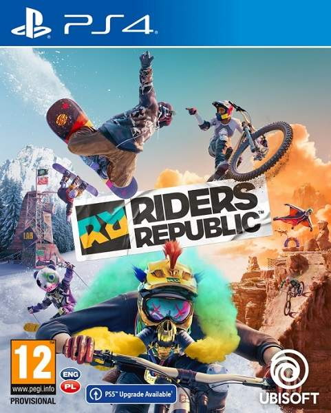
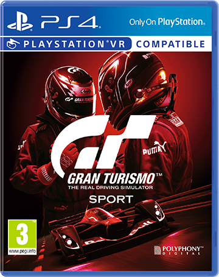
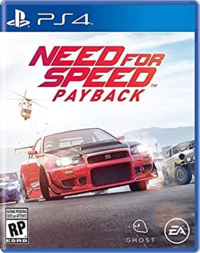
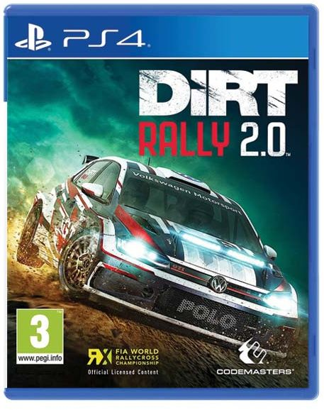
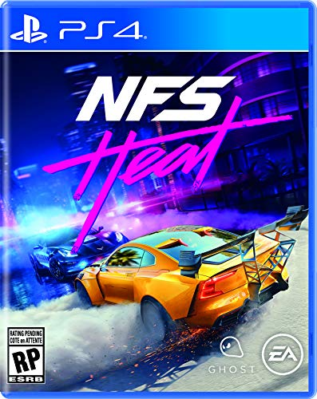
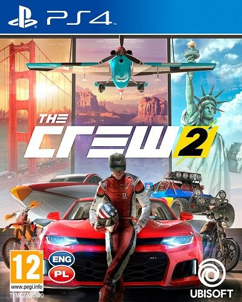
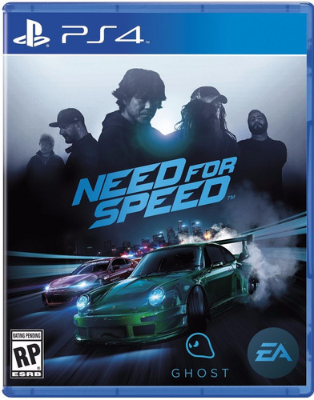
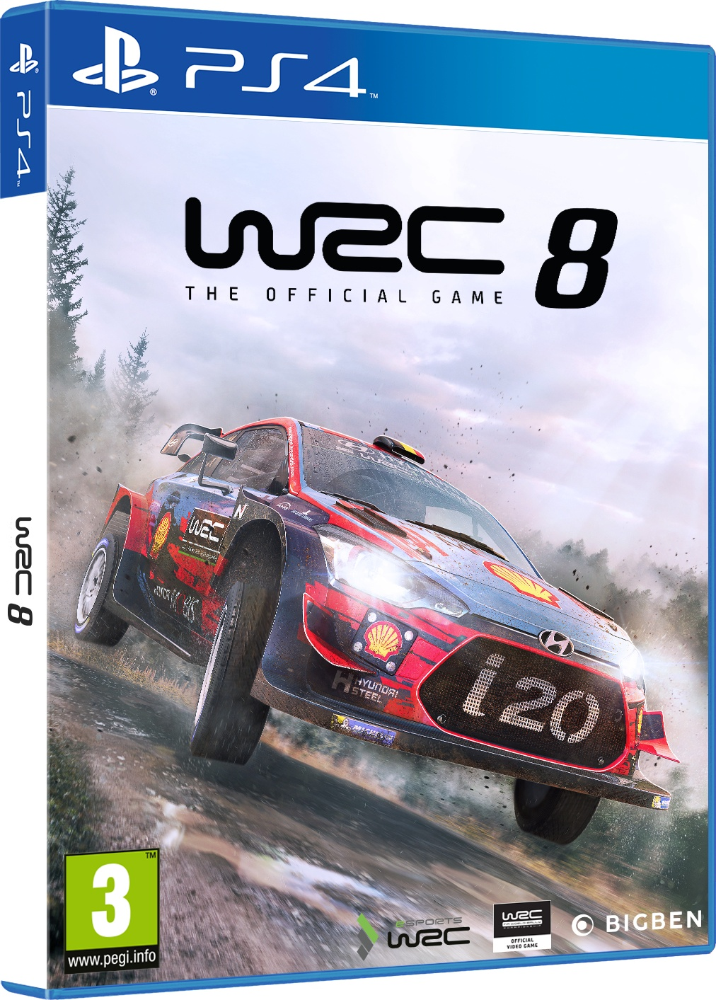
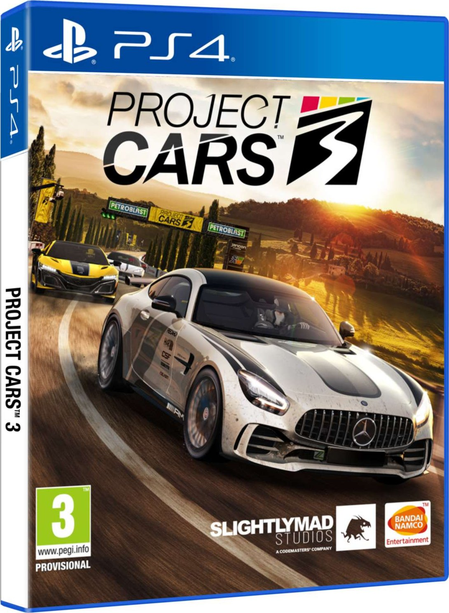

Nejlepší hry pro PlayStation 4
Zavodní videohry
Závodní hry jsou žánry videoher, ve kterých se hráč účastní závodní soutěže. Mohou být založeny na čemkoli, od skutečných závodních lig až po fantastická nastavení. Jsou distribuovány po spektru mezi realističtějšími závodními simulacemi a fantastickějšími arkádovými závodními hrami.
Riders Republic - PS4
Vývojář: Ubisoft
Datum vydání: 27. října 2021
Hodnocení: 8/10
České titulky: ne
O hře: Ocitáme se v obřím otevřeném světě, který na jedné mapě spojuje několik amerických národních parků. Na mapě si postupně zpřístupňujeme různé výzvy: může to být sjezd na kole, lyžích, předvádění triků, zdolávání překážkové dráhy, ale i plachtění ve wingsuitu, a to včetně motorové verze.
Gran Turismo Sport - PS4
Vývojář: Polyphony Digital
Datum vydání: 17. října 2017
Hodnocení: 7/10
České titulky: ano
O hře: Hráč začíná s určitým obnosem, který má na nákup auta (respektive jeho vylepšení) a postupem času si díky vítězstvím v závodech odemyká nové tratě, auta a získává peníze. Cílem je dokončit hru na 100%.
Need for Speed Payback - PS4
Vývojář: Ghost Games
Datum vydání: 10. listopadu 2017
Hodnocení: 6/10
České titulky: ne
O hře: Příběh je zasazen do města Fortune Valley, což je fiktivní variace pro Las Vegas. Tedy jedno město založené na hazardu a rozlehlé pouštní okolí. Sledujeme skupinu pouličních závodníků, vedené Tylerem Morganem (závodník).
DiRT Rally 2.0 - PS4
Vývojář: Codemasters
Datum vydání: 22. února 2019
Hodnocení: 8/10
České titulky: ne
O hře: Dirt Rally 2.0 je zaměřena na rally a rallycross . Hráči soutěží v měřených etapových akcích na asfaltu a v terénu v různých povětrnostních podmínkách. Hra obsahuje jeviště v Argentině , Austrálii , Novém Zélandu , Polsku , Španělsku a Spojených státech .
Need For Speed Heat - PS4
Vývojář: Ghost Games
Datum vydání: 28. října 2019
Hodnocení: 8/10
České titulky: ne
O hře: Hra je zasazena do fiktivního města Palm City, které je inspirováno městem Miami. Jedná se o otevřený svět.
The Crew 2 - PS4
Vývojář: Ubisoft Ivory Tower
Datum vydání: 31. května 2018
Hodnocení: 7/10
České titulky: ne
O hře: The Crew 2 je působivou horskou dráhou emocí. Otevřený svět a variabilita v přepínání vozidel je něco co žádná jiná hra nenabízí. Auta si můžete přizpůsobit podle vás a možnosti ve světě vám vystačí na dlouhé hodiny.
Need For Speed - PS4
Vývojář: Ghost Games
Datum vydání: 3. listopadu 2015
Hodnocení: 6/10
České titulky: ne
O hře: V napínavém restartu série Need for Speed objevíte otevřený noční svět městské automobilové kultury s pěti možnými způsoby hraní.
WRC 8 - PS4
Vývojář: Kylotonn
Datum vydání: září 2019
Hodnocení: 8/10
České titulky: ne
O hře: WRC 8 nabízí, stejně jako většina závodních her, hned několik módů, které si můžete zahrát. V hlavním menu najdete kariérní mód, o něm více později, quickplay, který vás nechá si zajet s jakýmkoliv autem na jakékoliv trati, season režim, kde si můžete zajet rallye z kariérního módu, trénink a testovací oblast, která je takovým menším otevřeným světem pro vyblbnutí.
Project CARS 3 - PS4
Vývojář: Slightly Mad Studios
Datum vydání: 24. srpna 2020
Hodnocení: 6/10
České titulky: ne
O hře: Project CARS 3 představuje více přizpůsobitelných vozů, které jsou k dispozici pro závody na více než 140 globálních okruzích. Hra také obsahuje 24hodinové cykly, různá roční období a efekty počasí.
David Švancar © 2021